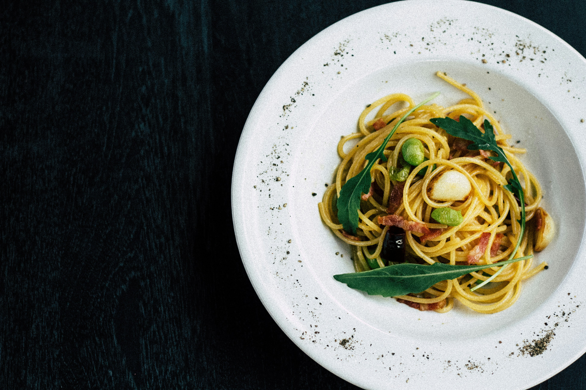
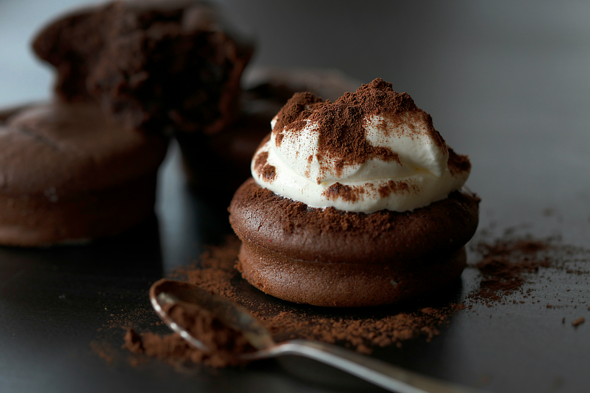

MENÜ
- Avokadolu Poşe Yumurta (Sourdough ekmek üzerinde)
- Fırınlanmış Burrata & Cherry Domates (Taze fesleğen ile)
- Izgara Hellim & Roka Salatası (Ballı hardal soslu)
- Karamelize Soğanlı & Mantarlı Mini Tart
- Falafel Tabağı (Humus, pancarlı yoğurt ile)
- Mini Quesadilla (Tavuklu ya da vejetaryen)
- İtalyan Usulü Caprese Şişleri (Mozzarella, domates, pesto)
- Trüf Yağlı Patates (Parmesan serpiştirilmiş)
- Mini Bruschetta Trio (Avokado, domates, mantar)
- Edamame (Deniz tuzu & acı biber soslu)

- Izgara Tavuklu Bowl (Kinoa, avokado, nohut, humus, tahin sos)
- Fırın Somon (Limonlu dereotu sos & sebzeli kuskus ile)
- Mac & Cheese (Trüf yağı ve cheddar ile zenginleştirilmiş)
- Bonfile Dilimleri (Patates püresi & demi-glace sos ile)
- Avokadolu Tavuk Wrap (Tam buğday lavaş, yoğurtlu sos)
- Kremalı Mantarlı Fettuccine
- Baharatlı Izgara Tavuk (Sebzeli pirinç pilavı ile)
- Vegan Köfte Tabağı (Mercimek köftesi, avokado, yoğurt sos)
- Köri Soslu Tavuk (Jasmine pirinci eşliğinde)
- Burger Tabağı (Gurme dana burger, el yapımı sos, patates ile)
- Izgara Hellim ve Sebze Şiş (Bulgur pilavı ile)
- Kremalı Karides Güveç (Fırınlanmış, yanında kıtır ekmek)

- Fettuccine Alfredo (Kremalı parmesan sos, opsiyonel tavuk eklenebilir)
- Trüf Yağlı Mantarlı Tagliatelle
- Pesto Soslu Spaghetti (Taze fesleğen, çam fıstığı, parmesan)
- Domatesli Penne Arabiata (Acılı domates soslu, vegan)
- Tavuklu Kremalı Penne
- Köri Soslu Sebzeli Pilav (Jasmine pirinç ile)
- Deniz Mahsullü Linguine (Karides, midye, sarımsaklı zeytinyağ sos)
- Kestaneli İç Pilav (Kuru meyve & baharat aromalı)
- Kinoalı Sebze Pilavı (Glutensiz & Vegan)
- Pancar Soslu Ravioli (Ricotta dolgulu, tereyağ sos)

- Tavuklu Sezar Salata (Izgara tavuk, parmesan, kruton, özel sos)
- Avokado & Kinoa Salatası (Nar taneli, zeytinyağlı limon soslu)
- Izgara Hellimli Akdeniz Salatası (Zeytin, domates, salatalık, roka)
- Bonfile Dilimli Salata (Roka, cherry domates, parmesan, balsamik)
- Renkli Nohut Salatası (Kırmızı soğan, taze nane, sumak soslu)
- Falafelli Bowl Salata (Humus, yeşillikler, tahin sos)
- Greyfurtlu & Biberiyeli Roka Salatası

- Espresso Tonic
- Iced Latte (Vanilya / Karamel / Fındık aromalı)
- Cold Brew (Buzlu, yavaş demleme)
- Matcha Latte (Badem sütlü opsiyon)
- Chai Tea Latte (Sıcak veya soğuk)
- Ev Yapımı Limonata (Fesleğenli / Zencefilli)
- İced Americano
- Sıcak Belçika Çikolatası (Gerçek çikolatadan)
- Meyveli Detox Suları (Çilek-nane / Salatalık-limon)
- Türk Kahvesi (Çifte kavrulmuş opsiyonlu)
- Bubble Tea (Tapyoka topları ile)

- New York Cheesecake (Orman meyveli sos ile)
- Lotus Bisküvili Cheesecake (Karamel soslu)
- Limonlu Mereng Tart
- Tiramisu (Ev yapımı, kahveli kek ile)
- Frambuazlı Brownie
- Fıstık Ezmeli Cookie (Soft & Chewy)
- San Sebastian Cheesecake
- Nutellalı Pancake (Meyve ve fındık parçacıklı)
- Kavanozda Magnolia (Muzlu ya da çilekli)
- Profiterol (Belçika çikolatalı sos ile)
- Crème Brûlée (Vanilyalı & karamelize şeker kaplı)
